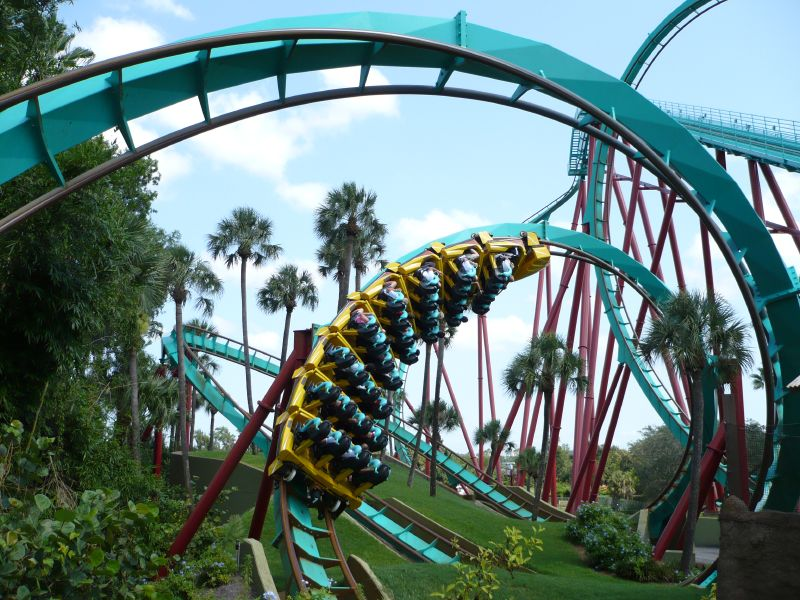
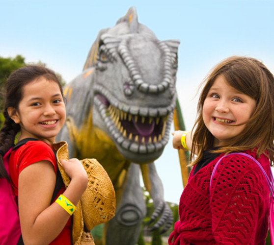
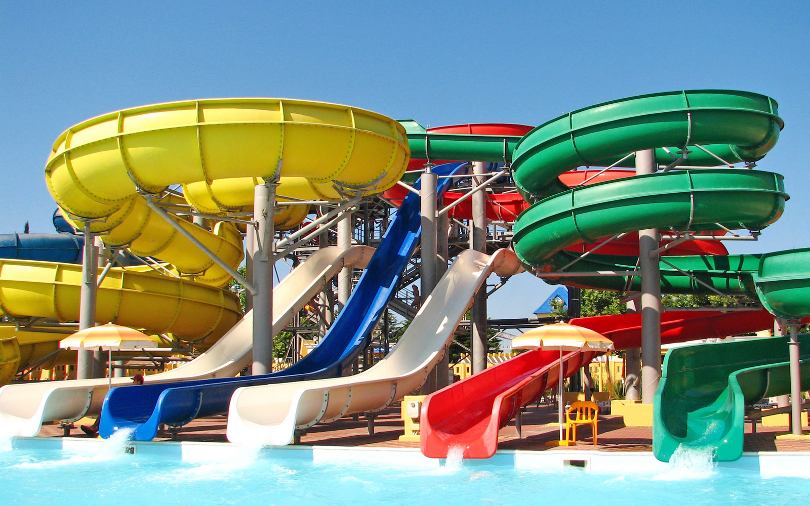
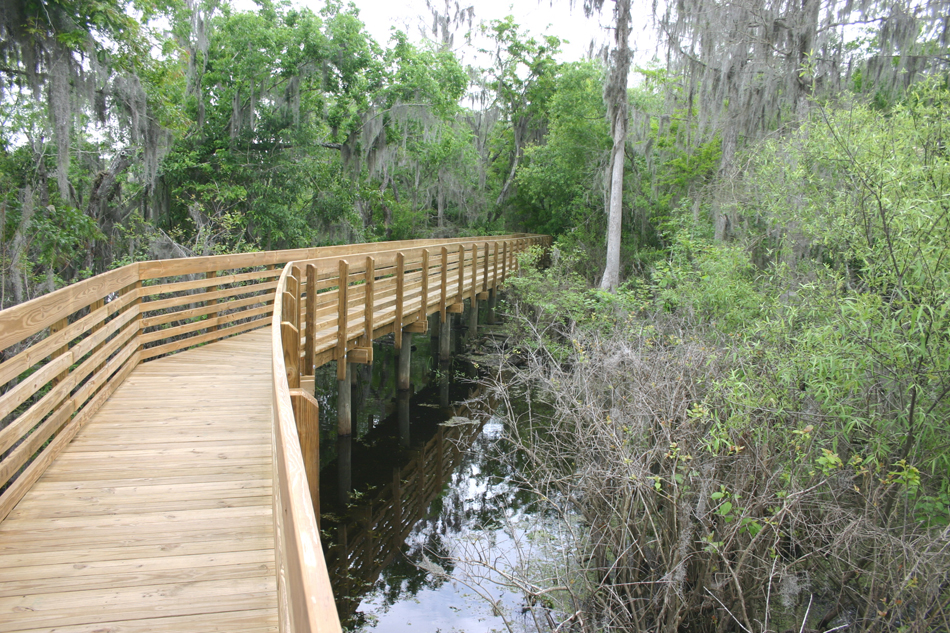

1
BUSCH GARDENS TAMPA BAY
The 335-acre (136 ha) African-themed animal theme park officially features eight roller coasters and two water rides amongst other rides and animal attractions. Its newest roller coaster, Cobra's Curse, opened in June 2016 in the Egypt area of the park. Busch Gardens is currently building a new roller coaster called Tigris, which is set to open in sometime in 2019 in the Stanleyville area of the park.


2
DINOSAUR WORLD
see over 200 life size dinosaurs at Dinosaur World! Dig for fossils and keep three at the Fossil Dig. Pan for real minerals and gems at the Dino Gem Excavation and crack your own geode with the Geode Cracker. At the Touch-and-Tell guess the dinosaur inside a hole without sight. Visit Mammoths: Giants of the Ice Age and see woolly mammoths as they appeared during their time. Be sure to make a stop at the Florida Fossil Museum and learn about fossils native to the area, and stop at the Prehistoric Museum. Here you will find real artifacts and an animatronic dinosaur display at the end of the museum. Play on the dinosaur themed playground - and don't forget your picnic lunch to Dine with the Dinos.


3
ADVENTURE ISLAND
Located right across the street from Busch Gardens Tampa, Adventure Island is 30 acres of water-drenched fun in the sun featuring the ultimate combination of high-speed thrills and tropical, tranquil surroundings for guests of all ages. Race down rapids, dig your toes into the sand or relax all day in a private cabana. New at Adventure Island, hurtle high and experience a feeling of weightlessness on Colossal Curl, Adventure Island newest family thrill slide.


4
LETTUCE LAKE PARK
Lettuce Lake Conservation Park is one of Hillsborough County's most visited parks. More than half of the park property lies in the natural floodplain of the Hillsborough River, consisting of a hardwood swamp forest. The remainder of the park consists of hardwood hammocks and pine flatwoods plant communities.The park features wooded picnic areas and playgrounds, a 1.25-mile paved exercise trail and 3,500-foot boardwalk with an observation tower provides scenic views of the Hillsborough River. Park ranger and volunteer-led nature education tours are available on weekends. Canoe and kayaks rentals provide up-close encounters with a variety of aquatic birds and wildlife.